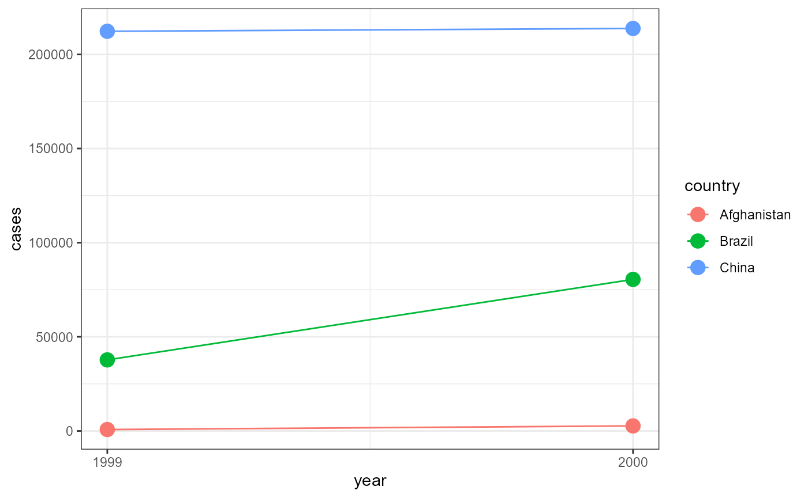

Lab 09: Tidy Data Entry
ENVS475: Experimental Analysis and Design
Source:vignettes/articles/lab_09_tidy-data-entry.Rmd
lab_09_tidy-data-entry.RmdOverview
This week, we will discuss “tidy” data and how to enter data into spreadsheet software in a tidy format. This will help you get your own data into R in the future.
What is tidy data?
Each variable is a column; Each column is a variable
Each Observation is a row; Each row is an observation
Each value is a cell; Each cell is a value

Figure 1. The following three rules make a dataset tidy: variables are columns, observations are rows, and values are cells. Fig from R4DS (2e), CC BY-NC-ND 3.0
Why use tidy data
- One consistent way of storing data.
- Easier to learn the tools
- Underlying uniformity
- Specific advantage to placing variables in columns
Allows R’s vectorized nature to shine.
most built-in R functions work with vectors of values.
That makes transforming tidy data feel particularly natural.
-
tidyverse- Designed to work with tidy data.
Working with Tidy data
-
table1is a small, tidy version of Tuberculosis infection data through time and by country.
- It is automatically loaded with the
tidyverse
table1## # A tibble: 6 × 4
## country year cases population
## <chr> <dbl> <dbl> <dbl>
## 1 Afghanistan 1999 745 19987071
## 2 Afghanistan 2000 2666 20595360
## 3 Brazil 1999 37737 172006362
## 4 Brazil 2000 80488 174504898
## 5 China 1999 212258 1272915272
## 6 China 2000 213766 1280428583-
Every column is one variable, and every variable is one column
- country, year, cases, population
- country, year, cases, population
-
Every row is one observation.
- row 1 is the observation of TB cases and total population for
Afghanistan in 1999, etc.
- row 1 is the observation of TB cases and total population for
Afghanistan in 1999, etc.
Every cell is a single value.
Consistent data set up
Takes advantage of R’s vectorized functions
Calculate the infection rate per 1000 people:
table1 |>
mutate(rate = cases / population * 10000)## # A tibble: 6 × 5
## country year cases population rate
## <chr> <dbl> <dbl> <dbl> <dbl>
## 1 Afghanistan 1999 745 19987071 0.373
## 2 Afghanistan 2000 2666 20595360 1.29
## 3 Brazil 1999 37737 172006362 2.19
## 4 Brazil 2000 80488 174504898 4.61
## 5 China 1999 212258 1272915272 1.67
## 6 China 2000 213766 1280428583 1.67- It also allows for easy grouping
- What is the total TB-infection numbers per year?
## # A tibble: 2 × 2
## year total_cases
## <dbl> <dbl>
## 1 1999 250740
## 2 2000 296920- And we can easily plug this into
ggplot
- Map aesthetics to variables.
- i.e.,
color = country
- i.e.,
ggplot(table1, aes(x = year,
y = cases,
color = country)) +
geom_line() +
geom_point(size = 4) +
theme_bw() +
scale_x_continuous(breaks = c(1999, 2000)) 
Long and Wide data
Data can be described as long (lots or rows)
or wide (lots of columns)
Generally, tidy data is “long”, but not always.
The
tidyrpackage (part of thetidyverse) is made to make data tidypivot_longer()andpivot_wider()are the two primary functions-
A full examination of
tidyris outside the scope of this course- but if you’re interested, consider taking my intro to R course in the fall semester.
Untidy example
Long data, one column has many variables in it
-
table2has the same data astable1but it is in a long format
table2## # A tibble: 12 × 4
## country year type count
## <chr> <dbl> <chr> <dbl>
## 1 Afghanistan 1999 cases 745
## 2 Afghanistan 1999 population 19987071
## 3 Afghanistan 2000 cases 2666
## 4 Afghanistan 2000 population 20595360
## 5 Brazil 1999 cases 37737
## 6 Brazil 1999 population 172006362
## 7 Brazil 2000 cases 80488
## 8 Brazil 2000 population 174504898
## 9 China 1999 cases 212258
## 10 China 1999 population 1272915272
## 11 China 2000 cases 213766
## 12 China 2000 population 1280428583-
The problem here is that the
typecolumn actually has two variables in it:-
casesandpopulation
-
To fix this data, we need to make two new columns called
casesandpopulationWe would remove the
countcolumn, and move the values into the appropriate new columns.Here is an example of what the first two rows would look like.
tibble(country = "Afghanistan",
year = 1999,
cases = c(745, 2666),
population = c(19987071, 20595360))## # A tibble: 2 × 4
## country year cases population
## <chr> <dbl> <dbl> <dbl>
## 1 Afghanistan 1999 745 19987071
## 2 Afghanistan 1999 2666 20595360Variables in column names
- Another common problem is that the columns have multiple variables
in the names.
- let’s look at a subset of the
who2data-
who2is also a part of thetidyverse
- The
who2has TB data reported by country and year
- the column names has information on the:
- Test type, i.e.,
sp,sn,ep
- Patient sex:
morf
- Patient age range
014,1524…,65
- Test type, i.e.,
-
## # A tibble: 6 × 6
## country year sp_m_014 sp_m_1524 sn_f_5564 sn_f_65
## <chr> <dbl> <dbl> <dbl> <dbl> <dbl>
## 1 Afghanistan 1980 NA NA NA NA
## 2 Afghanistan 1981 NA NA NA NA
## 3 Afghanistan 1982 NA NA NA NA
## 4 Afghanistan 1983 NA NA NA NA
## 5 Afghanistan 1984 NA NA NA NA
## 6 Afghanistan 1985 NA NA NA NA- This is a wide data format
- In this example, the
who2data has 56 columns which could be presented in 3 columns (test type, sex, age range) and many more rows
- In other words, this data needs to be transformed into a long format.